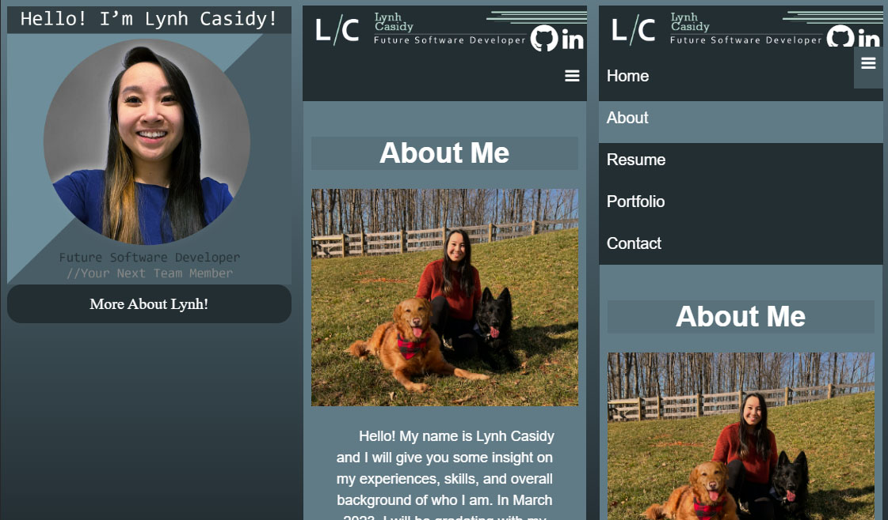

My Portfolio Website
OverviewI created this website to display my resume, work experience, and skills for prospecting employers. Being new into software development and IT in general, I wanted to be able to show that I have the capability to learn how to do something I've never done before. I learned how to use GitHub pages to host my own website. I still use Photoshop to edit photos, but it has been quite some time since I've made my own graphics. So for my website, I decided to show my Photoshop abilities and creativity in designing a website. Lastly, my website is a responsive design, so user can view my page on a desktop, mobile phone, or tablet.
Takeaway
Back in my middle school/high school days, I used to create MySpace and Neopets profile pages using just HTML. CSS and Javascript are new to me. I have worked with CSS and Javascript in my classes at WGU, but it was creating a website by following instructions through a virtual textbook. My website is the first time I created something on my own accord using all three languages. Overall, building this website expanded my knowledge in HTML, CSS, and Javascript.
Tools
● Visual Studio Code
● Adobe Photoshop 2023 (used to make thumbnails)
● Shutterstock & Unsplash (royalty-free stock photos displayed on the "Portfolio" main page)
● GitHub Pages (hosting service for the website)
Language(s)
● HTML
● CSS
● Javascript
GitHub Repo
Project Output
Website on Mobile

◁ ATM Selections Appointment Scheduler ▷